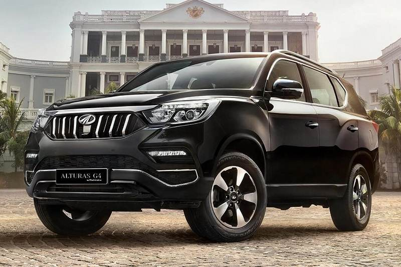

Alturas G4 Specs, Features and Price
The Diesel engine is 2157 cc . It is available with Automatic transmission. Depending upon the variant and fuel type the Alturas G4 has a mileage of 12.03 to 12.35 kmpl . The Alturas G4 is a 7 seater 4 cylinder car and has length of 4850 mm, width of 1960 mm and a wheelbase of 2865 mm.